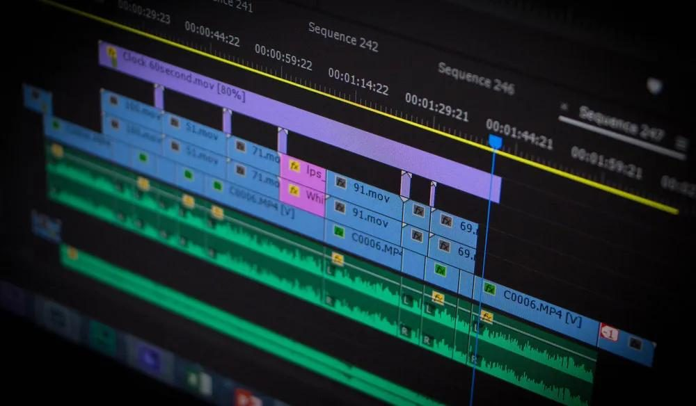

Short answer: Start video editing with a free tool like CapCut, learn the basics in weeks, and pick one editor to master before switching. Every creator and business needs an editor, and editing is unusually beginner-friendly. This guide compares Premiere Pro, CapCut and the YouTube opportunity so you choose the right first tool.
Every creator and business needs an editor. Which tool to learn first, what courses actually teach, and how editors turn skills into monthly income.

Video is the internet's default language now, and behind almost every successful YouTuber, brand and online course is an editor. Editing is also unusually beginner-friendly: you can learn the basics in weeks and start with free software.
Our advice: start on CapCut or Resolve's free version this week. Move to Premiere Pro when a client or employer asks for it — the concepts transfer almost one-to-one.
Look for courses that teach storytelling, not just software: cutting on action, pacing, sound design, captions, and colour. A course that only tours the menus will leave you able to operate Premiere and unable to edit a watchable video. Project-based courses, where you edit real footage end-to-end, are worth several menu tours.
Short-form editing (reels, shorts, TikTok) is the fastest entry: high demand, quick turnaround. Long-form YouTube editing pays more per video and leads to monthly retainers with creators. Either way, a showreel of 3–4 edited videos is your application — build it before you pitch anyone.
Tip: Edit something every day for 30 days, even 20 minutes. Editing is a rhythm skill — your cuts get faster and cleaner with reps, not with more tutorials.
CapCut is the easiest free start for short-form video, DaVinci Resolve's free version suits computer editing and colour work, and Premiere Pro is a common professional standard for YouTube and client work. Pick one and learn it properly before switching.
Yes. CapCut and DaVinci Resolve are free to start, and you can learn earning-ready basics in weeks by editing a small video regularly. Paid courses mainly add structure, feedback and project footage.
Build a showreel of three or four edited videos first, then pitch creators and businesses. Short-form editing is the fastest entry, while long-form YouTube editing can lead to regular monthly work with one creator.